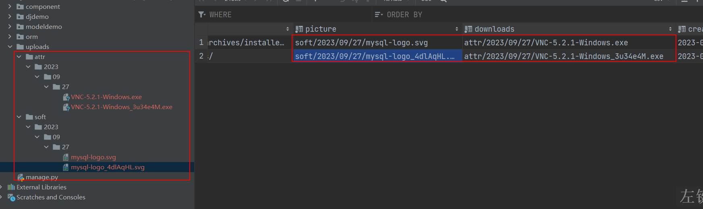

<input type="file" name="字段名" />中的name<form>带有enctype="multipart/form-data" 的情况下才会包含文件。否则requests.FILES 将为一个空的类似于字典的对象xxxxxxxxxx241from django.db import models234# Create your models here.5class Software(models.Model):6 name = models.CharField(max_length=150, verbose_name="软件名称")7 version = models.CharField(max_length=50, verbose_name="版本号")8 website = models.URLField(max_length=500, verbose_name="官方网址")9 # upload_to 用于设置保存上传文件的存储子路径，跟着settings.py中存储上传文件配置项MEDIA_ROOT的后部分路径10 # ImageField是FileField的子类，FileField内部实现了基于日期时间格式生成目录的功能，所以支持使用%日期符号来自动创建目录的。11 # 而且，当同一目录下文件同名了，FileField会自动把后面重复的文件名追加补充随机字符串防止重名。12 picture = models.ImageField(upload_to="soft/%Y/%m/%d/", verbose_name="缩略图")13 downloads = models.FileField(max_length=500, upload_to="attr/%Y/%m/%d/", verbose_name="下载地址")14 created_time = models.DateTimeField(auto_now_add=True)15 updated_time = models.DateTimeField(auto_now=True)1617 class Meta:18 db_table = "tb_software"19 verbose_name = "应用管理管理"20 verbose_name_plural = verbose_name2122 def __str__(self):23 return f"{self.name}.{self.version}"24xxxxxxxxxx51pip install Pillow23# 把上面User模型进行数据迁移4python manage.py makemigrations5python manage.py migrate图片等文件进行上传处理时，还要在django的配置文件中设置存储文件的根路径才可以
xxxxxxxxxx21# 设置保存上传文件的公共路径2MEDIA_ROOT = BASE_DIR / "uploads"使用postman，完成文件上传，或者使用模板引擎或前端代码，实现一个上传文件的表单
xxxxxxxxxx201<html lang="en">3<head>4 <meta charset="UTF-8">5 <title>Document</title>6</head>7<body>8 <form method="post" action="http://127.0.0.1:8000/component/soft/" enctype="multipart/form-data">9 {% csrf_token %}10 软件名：<input type="text" name="name"><br><br>11 版本号：<input type="text" name="version"><br><br>12 官方网址：<input type="text" name="website"><br><br>13 版本号：<input type="text" name="version"><br><br>14 软件缩略图：<input type="file" name="picture"/><br><br>15 软件上传：<input type="file" name="downloads"/><br><br>16 <input type="submit" value="提交">17 </form>1819</body>20</html>
视图处理上传文件的代码，views.py：
xxxxxxxxxx451import os23from django.views import View4from django.http.response import JsonResponse5from . import models67# Create your views here.8class SoftWareView(View):9 def post(self, request):10 """添加数据"""11 # 接受来自客户端的请求数据12 name = request.POST.get("name")13 version = request.POST.get("version")14 website = request.POST.get("website")15 picture = request.FILES.get("picture")16 downloads = request.FILES.get("downloads")17 software = models.Software.objects.create(18 name=name,19 version=version,20 website=website,21 picture=picture,22 downloads=downloads23 )2425 return JsonResponse({26 "id": software.id,27 "name": software.name,28 "version": software.version,29 "website": software.website,30 # 模型字段是图片或者文件的，当前属性是文件对象，是无法直接被json序列化的，所以调用url属性才能获取url访问路径31 "picture": f"//{request.META.get('HTTP_HOST')}{software.picture.url}",32 "downloads": f"//{request.headers.get('host')}{software.downloads.url}",33 })3435 def delete(self, request):36 """删除操作"""37 id = request.GET.get("id")38 software = models.Software.objects.filter(pk=id).first()39 # 通过path可以获取当前上传的绝对路径，通过绝对路径可以删除文件40 print(software.picture.path)41 # 删除操作代码：42 os.remove(software.picture.path)43 os.remove(software.downloads.path)44 return JsonResponse({})45urls.py，代码：
xxxxxxxxxx71from django.urls import path2from . import views345urlpatterns = [6 path("soft/", views.SoftWareView.as_view()),7]效果：

settings.py，代码：
xxxxxxxxxx41# 项目中存储上传文件的根目录[手动创建]，注意，uploads目录需要手动创建否则上传文件时报错2MEDIA_ROOT = BASE_DIR / "uploads"3# 访问上传文件的url地址前缀4MEDIA_URL = "/uploads/"urls.py，代码：
xxxxxxxxxx51from django.views.static import serve # 静态文件代理访问模块23urlpatterns = [4 re_path(r'uploads/(?P<path>.*)', serve, {"document_root": settings.MEDIA_ROOT}),5]
分页的本质，实际上就是SQL语句的限制结果而已。
xxxxxxxxxx81select * from tb_student 2# 能查尽查，默认查询全部数据。但是我们用户看不了也不会去看太多数据的。3# 而SQL语句有可能查询出几十万条数据，这是没必要的，所以我们可以采用limit 配合 offset来进行分页查询4select * from db_student limit 10 offset 0; # 第1页数据，limit 0,10;5select * from db_student limit 10 offset 10; # 第2页数据，limit 10,10;6select * from db_student limit 10 offset 20; # 第3页数据，limit 20,10;78select * from db_student limit <size> offset <start>; # 第n页数据，limit (n-1)*size, size;Django提供了一些类实现管理数据分页，这些类位于django/core/paginator.py中。
注意：
django提供的这些分页相关的类，默认是用于前后端不分离的。
页码对象。
先设置setttings.py中的TEMPLATE模板引擎的模板目录，代码：
xxxxxxxxxx151TEMPLATES = [2 {3 "BACKEND": "django.template.backends.django.DjangoTemplates",4 "DIRS": [ BASE_DIR / "templates" ], # 手动创建模板目录5 "APP_DIRS": True,6 "OPTIONS": {7 "context_processors": [8 "django.template.context_processors.debug",9 "django.template.context_processors.request",10 "django.contrib.auth.context_processors.auth",11 "django.contrib.messages.context_processors.messages",12 ],13 },14 },15]
models.py，代码：
xxxxxxxxxx271from django.db import models234class Student(models.Model):5 STATUS = (6 (0, "正常入学"),7 (1, "正常毕业"),8 (2, "已经辍学"),9 )10 name = models.CharField(max_length=15, verbose_name="学生名字")11 age = models.SmallIntegerField(verbose_name="年龄")12 sex = models.BooleanField(default=True, verbose_name="性别")13 classmate = models.CharField(db_column="class", max_length=50, verbose_name="班级")14 mobile = models.CharField(max_length=20, unique=True, verbose_name="下载地址")15 description = models.TextField(null=True, verbose_name="个性签名")16 status = models.SmallIntegerField(null=True, verbose_name="状态码")17 created_time = models.DateTimeField(auto_now_add=True)18 updated_time = models.DateTimeField(auto_now=True)1920 class Meta:21 db_table = "student"22 verbose_name = "学生信息"23 verbose_name_plural = verbose_name2425 def __str__(self):26 return f"{self.name}"27
views.py，代码：
xxxxxxxxxx321from django.shortcuts import render2from django.views import View3from django.core.paginator import Paginator4from . import models567class StudentView(View):8 def get(self, request):9 """数据分页"""10 """提供了数据对象列表以及单页数据量，创建分页器对象"""11 # Paginator(数据对象列表, limit)12 student_list = models.Student.objects.all()13 paginator = Paginator(list(student_list), 10)14 # # 数据列表的长度15 # print(paginator.count)16 # # 页码总数17 # print(paginator.num_pages)18 # # 页面列表19 # print(paginator.page_range)2021 """基于分页器对象，创建分页对象"""22 # 接受客户端的页码，页面一般都是查询字符串，或者路径参数23 current_page = request.GET.get("page",1)24 page = paginator.page(current_page)25 # # 当前页要展示给外界的数据对象列表26 # print(page.object_list)27 # # 当前页码28 # print(page.number)29 # # 逆向查找当前Page分页对象的父级分页器对象30 # print(page.paginator)31 return render(request, "index.html", locals())32urls.py，代码：
xxxxxxxxxx71from django.urls import path2from . import views345urlpatterns = [6 path("student/", views.StudentView.as_view()),7]list.html，模板代码：
xxxxxxxxxx741<html lang="en">3<head>4 <meta charset="UTF-8">5 <title>分页</title>6 <style>7 .table-data{8 border-collapse: collapse;9 width: 680px;10 }11 .table-data td, th{12 border: 1px solid red;13 font-weight: normal;14 text-align: center;15 }16 .paginator{17 width: 680px;18 text-align: center;19 padding-top: 10px;20 }21 .paginator a{22 color: #000;23 text-decoration: none;24 border: 1px solid lightsalmon;25 padding: 4px 8px;26 cursor: pointer;27 border-radius: 4px;28 }29 .paginator a.current,30 .paginator a:hover{31 background: lightsalmon;32 color: wheat;33 }34 </style>35</head>36<body>37 <table class="table-data">38 <tr>39 <th>ID</th>40 <th>Name</th>41 <th>Age</th>42 <th>Sex</th>43 <th>Class</th>44 <th>Mobile</th>45 </tr>46 {% for student in page.object_list %}47 <tr>48 <td>{{ student.id }}</td>49 <td>{{ student.name }}</td>50 <td>{{ student.age }}</td>51 <td>{{ student.sex }}</td>52 <td>{{ student.classmate }}</td>53 <td>{{ student.mobile }}</td>54 </tr>55 {% endfor %}56 </table>57 <div class="paginator">5859 <a href="?page=1">首页</a>60 {% if page.has_previous %}61 <a href="?page={{ page.previous_page_number }}">上一页</a>62 <a href="?page={{ page.previous_page_number }}">{{ page.previous_page_number }}</a>63 {% endif %}6465 <a>{{ page.number }}</a>66 {% if page.has_next %}67 <a href="?page={{ page.next_page_number }}">{{ page.next_page_number }}</a>68 <a href="?page={{ page.next_page_number }}">下一页</a>69 {% endif %}70 <a href="?page={{ page.paginator.num_pages }}">尾页</a>7172 </div>73</body>74</html>
django为了方便开发者快速的实现业务功能，针对简单视图数据的管理操作，例如增删查改操作，都有提供了封装视图类给开发者使用，在django.views.generic中定义了所有的封装视图类：ListView,CreateView,UpdateView,DetailView,DeleteView。
注意：
所有的封装视图类，都是View类的子类，所以View类中提供的http请求，也可以在封装视图类中使用，封装视图要绑定路由，一样需要使用as_view来绑定。
| 封装视图类 | 作用 | 补充 |
|---|---|---|
| ListView | 显示列表数据 | 支持分页，提供get方法 |
| CreateView | 显示添加数据表单和数据添加功能 | 提供表单，提供get、post方法 |
| UpdateView | 显示更新数据表单和数据更新功能 | 提供表单，提供get、put、patch方法 |
| DetailView | 显示详情数据 | 只显示一条数据，提供get方法 |
| DeleteView | 删除一条数据 | 提供delete方法 |
视图代码：
xxxxxxxxxx531from django.shortcuts import render2from django.views import View3from django.core.paginator import Paginator4from . import models567class StudentView(View):8 def get(self, request):9 """数据分页"""10 """提供了数据对象列表以及单页数据量，创建分页器对象"""11 # Paginator(数据对象列表, limit)12 student_list = models.Student.objects.all()13 paginator = Paginator(list(student_list), 10)14 # # 数据列表的长度15 # print(paginator.count)16 # # 页码总数17 # print(paginator.num_pages)18 # # 页面列表19 # print(paginator.page_range)2021 """基于分页器对象，创建分页对象"""22 # 接受客户端的页码，页面一般都是查询字符串，或者路径参数23 current_page = request.GET.get("page",1)24 page = paginator.page(current_page)25 # # 当前页要展示给外界的数据对象列表26 # print(page.object_list)27 # # 当前页码28 # print(page.number)29 # # 逆向查找当前Page分页对象的父级分页器对象30 # print(page.paginator)31 return render(request, "index.html", locals())323334from django.views.generic import ListView353637class Student2View(ListView):38 # # 设置当前视图提供哪些方法，默认支持get39 # http_method_names = ["get"]40 # 设置当前视图类中使用模板文件名41 template_name = "index2.html"42 # 设置当前视图类中使用的模型43 model = models.Student44 # 设置分页的数据量45 paginate_by = 546 # # 设置分页的页码，默认是"page"47 # page_kwarg = "page"48 # 在HTML模板中，代表page对象的object_list变量名49 # context_object_name = "student_list"50515253urls，代码：
xxxxxxxxxx81from django.urls import path2from . import views345urlpatterns = [6 path("student/", views.StudentView.as_view()),7 path("student2/", views.Student2View.as_view()),8]
index2.html，模板代码：
xxxxxxxxxx741<html lang="en">3<head>4 <meta charset="UTF-8">5 <title>分页</title>6 <style>7 .table-data{8 border-collapse: collapse;9 width: 680px;10 }11 .table-data td, th{12 border: 1px solid red;13 font-weight: normal;14 text-align: center;15 }16 .paginator{17 width: 680px;18 text-align: center;19 padding-top: 10px;20 }21 .paginator a{22 color: #000;23 text-decoration: none;24 border: 1px solid lightsalmon;25 padding: 4px 8px;26 cursor: pointer;27 border-radius: 4px;28 }29 .paginator a.current,30 .paginator a:hover{31 background: lightsalmon;32 color: wheat;33 }34 </style>35</head>36<body>37 <table class="table-data">38 <tr>39 <th>ID</th>40 <th>Name</th>41 <th>Age</th>42 <th>Sex</th>43 <th>Class</th>44 <th>Mobile</th>45 </tr>46 {% for student in page_obj.object_list %}47 <tr>48 <td>{{ student.id }}</td>49 <td>{{ student.name }}</td>50 <td>{{ student.age }}</td>51 <td>{{ student.sex }}</td>52 <td>{{ student.classmate }}</td>53 <td>{{ student.mobile }}</td>54 </tr>55 {% endfor %}56 </table>57 <div class="paginator">5859 <a href="?page=1">首页</a>60 {% if page_obj.has_previous %}61 <a href="?page={{ page_obj.previous_page_number }}">上一页</a>62 <a href="?page={{ page_obj.previous_page_number }}">{{ page_obj.previous_page_number }}</a>63 {% endif %}6465 <a>{{ page_obj.number }}</a>66 {% if page_obj.has_next %}67 <a href="?page={{ page_obj.next_page_number }}">{{ page_obj.next_page_number }}</a>68 <a href="?page={{ page_obj.next_page_number }}">下一页</a>69 {% endif %}70 <a href="?page={{ page_obj.paginator.num_pages }}">尾页</a>7172 </div>73</body>74</html>
对于中等流量的网站来说，尽可能地减少开销是必要的。缓存数据就是为了保存那些需要很多计算资源的结果，这样的话就不必在下次重复消耗计算资源
Django自带了一个健壮的缓存系统来保存动态页面，避免对于每次请求都重新计算
Django提供了不同级别的缓存粒度：可以缓存特定视图的输出、可以仅仅缓存那些很难生产出来的部分、或者可以缓存整个网站
注意i，这3个缓存级别不能同时使用。
xxxxxxxxxx101# Cache2# https://docs.djangoproject.com/zh-hans/4.2/topics/cache/34CACHES = {5 "default": {6 "BACKEND": "django.core.cache.backends.redis.RedisCache",7 "LOCATION": "redis://127.0.0.1:16379",8 "TIMEOUT": 60,9 }10}xxxxxxxxxx21# pip install cryptography # 这个是连接数据库有时候涉及加密时使用的模块2pip install django-redis-cachesettings.py，代码：
xxxxxxxxxx71CACHES = {2 "default": {3 "BACKEND": "redis_cache.cache.RedisCache", # django-redis-cache4 "LOCATION": "redis://127.0.0.1:6379", # 数据源格式连接写法 mysql://账号:密码@IP:端口/数据库名称?5 'TIMEOUT': 60, # 缓存失效时间，这里60秒只是为了测试而已6 },7}xxxxxxxxxx111# 终端下连接redis，进行redis交互终端：2redis-cli # memurai-cli3# 切换数据库：4select 155select 06# 设置一个数据，保存到指定变量名中 set 变量 值7set name xiaoming8# 查看数据的变量（键/key）：9keys *10# 获取指定变量名的数据：11get name
xxxxxxxxxx221"""缓存函数视图的返回结果"""2from django.http.response import HttpResponse3from django.views.decorators.cache import cache_page4import random567(timeout=60 * 60 * 20 + random.randint(1, 9999)) # 一为了避免所有视图缓存同一时间过期，造成服务器需要在短时间内生成大量的缓存，一般是设置随机数过期时间。8def index(request):9 print("执行视图代码了！")10 return HttpResponse('hello!')111213"""缓存类视图的返回结果"""14# cache_page 是基于函数视图进行缓存的，所以无法直接给类视图使用，需要使用method_decorator进行类视图转换15from django.utils.decorators import method_decorator161718class IndexView(View):19 (cache_page(timeout=60))20 def get(self, request):21 print("执行视图代码了！")22 return HttpResponse('hello! IndexView.get')urls.py，代码：
xxxxxxxxxx101from django.urls import path2from . import views345urlpatterns = [6 path("student/", views.StudentView.as_view()),7 path("student2/", views.Student2View.as_view()),8 path("index/", views.index),9 path("index2/", views.IndexView.as_view()),10]上面的视图缓存，是直接在中间件层面拦截的，当视图缓存存在时，直接在中间件就返回结果了。而开发中经常存在一个视图中提供多个数据，其中只有部分数据是缓存的，其他需要实时从数据库中读取的。这种情况就不适合使用视图缓存，而应该使用粒度更小的缓存方式-缓存API。
缓存API是针对于某个变量数据进行单独缓存的，使用上比视图缓存更为灵活。
xxxxxxxxxx51from django.core.cache import cache2设置：cache.set(键,值,有效时间)3获取：cache.get(键)4删除：cache.delete(键)5清空：cache.clear() # 慎用，这个会把整个库所有的 缓存数据全部清空！视图，代码：
xxxxxxxxxx231"""Django提供的缓存对象进行数据缓存[缓存API]"""2from django.http.response import JsonResponse3from django.core.cache import cache456class HomeView(View):7 def get(self, request):8 # 读取缓存9 student_list = cache.get("student_list")10 # 判断缓存结果，如果没有，则读取数据库并写入缓存11 if not student_list:12 print("读取数据库!")13 student_list = list(models.Student.objects.values_list())14 cache.set("student_list", student_list, 10) # 这里的10表示当前数据缓存10秒后过期，当然在实际工作中，不会设置10秒的。1516 return JsonResponse(student_list, safe=False)1718 def delete(self,request):19 """删除/更新数据时，记得要删除缓存哦"""20 # 删除/更新数据时，先删缓存，再删除/更新数据库的数据21 cache.delete("student_list")22 return JsonResponse({}, safe=False)23urls.py，代码：
xxxxxxxxxx111from django.urls import path2from . import views345urlpatterns = [6 path("student/", views.StudentView.as_view()),7 path("student2/", views.Student2View.as_view()),8 path("index/", views.index),9 path("index2/", views.IndexView.as_view()),10 path("home/", views.HomeView.as_view()),11]缓存适用于哪些场景？不适用于哪些场景？
适用于数据稳定，不会经常发生变化的业务中，例如：配置信息，文章、新闻、商品等展示数据。
不适用于实时性要求比较高的业务中，例如：股市k线图，实时直播的新闻、聊天....